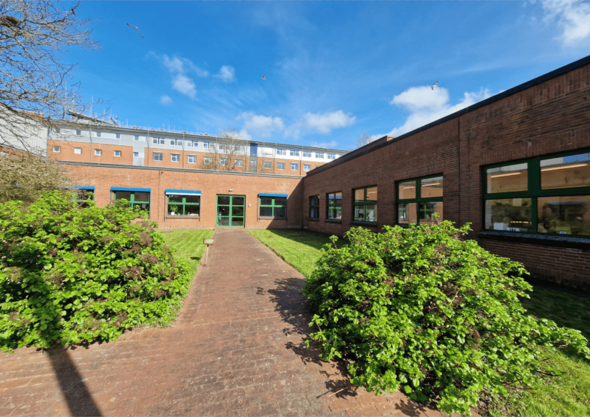
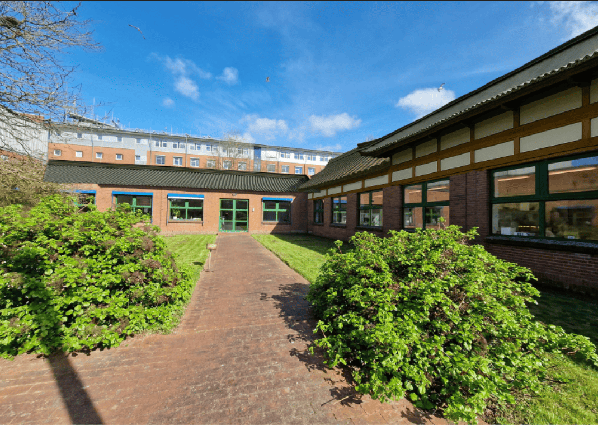
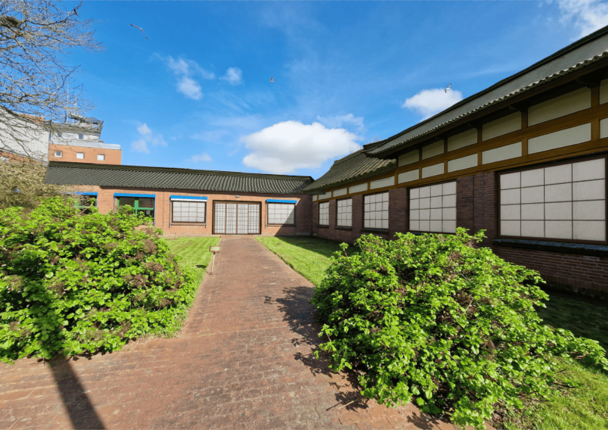
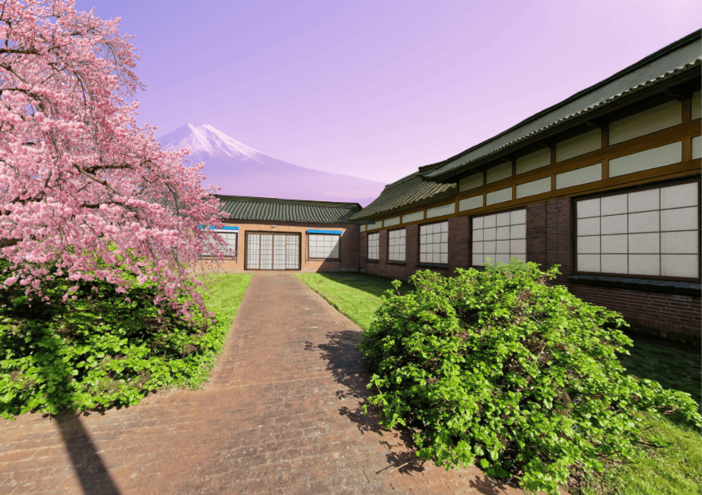
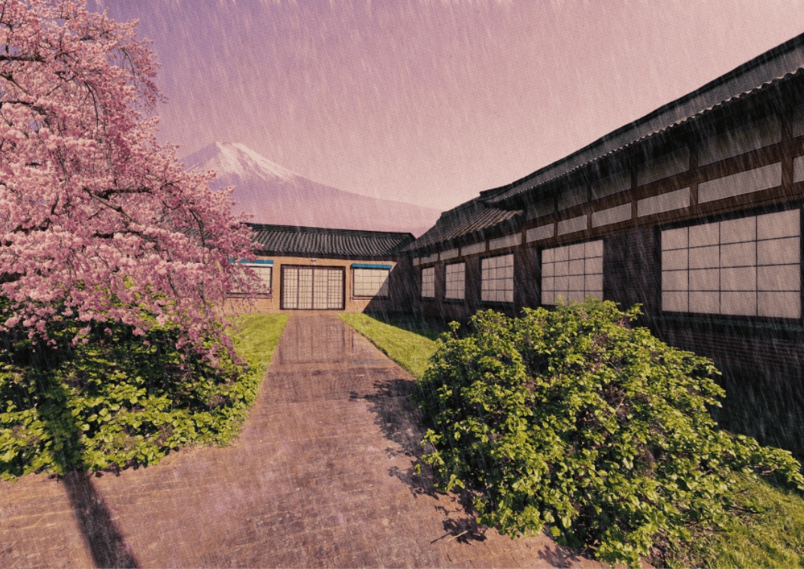

Ein kleines Stück Japan auf dem Campus


Aufgabenbeschreibung zu dem Projekt
„Flensburg Utopie“: Erstellen einer Bildmontage auf Basis von Fotos aus Flensburg. Nehmt selbst ein Foto für das Hintergrundbild auf. Die Montage muss aus mindestens fünf Einzelbildern zusammengebaut sein. Nehmt eine Szene aus Flensburg, bzw. eurer Umgebung, und lasst eure Fantasie spielen, wie ihr diese mit den Bildbearbeitungstechniken verändern könnt. Thematisch könnte es etwas sein wie Cyberpunk, Fahrradparadies, verändertes FL-Stadtbild, Street Art/Graffiti oder Dystopian Future, oder eure eigene Idee. Einmal in A4-Format bei 300 ppi, Querformat oder Hochformat.
Verwendete Werkzeuge und Ergebnis
Für dieses Projekt wurde ein Foto des Flensburger Hochschulcampus in Adobe Photoshop zu einer Szene im Stil des feudalen Japans umgestaltet. Dafür kamen urheberrechtsfreie Bildelemente wie Shoji-Fenster und ein Kirschbaum zum Einsatz. Ergänzend wurden einzelne KI-generierte Motive verwendet, aus denen passende Elemente - beispielsweise Teile eines Dachs - freigestellt und in die Gebäude integriert wurden.
Zusätzlich sorgen ein Regeneffekt, Spiegelungen in den Pfützen auf den roten Ziegelsteinen sowie der ausgetauschte Hintergrund mit dem Mount Fuji für eine stimmige Atmosphäre. Ein abschließender Farbfilter verleiht dem Bild einen leicht gealterten, träumerischen Look.
Das Ergebnis ist eine authentisch wirkende Interpretation des Flensburger Hochschulcampus - als würde er im feudalen Japan stehen.
Entstehungsprozess
-

1Original
-

2Dächer AI generieren lassen, dann freigestellt / hinzugefügt und angeordnet + schattiert
-

3Fenster (Shoji's) / Tür eingefügt und schattiert + Gebäude im Hintergrund entfernt
-

4Hintergrund (Mount Fuji), Cherry blossom tree hinzugefügt + einige Mängel ausgebessert (Aschenbecher auf Gehweg entfernt, Stufen bei der Tür ausgebessert, Spitze bei Busch ergänzt, Fleck bei Tür entfernt)
-

5Color Lookups, Overlays (Texturen) hinzugefügt, Regen mithilfe von Filter > Renderfilter > Fasern + Motion Blur hinzugefügt, Reflektierung (Gehweg) mit Polygon-Lasso + Ebenenmaske hinzugefügt + Dirty Texture